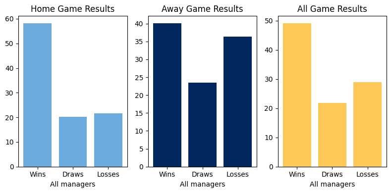
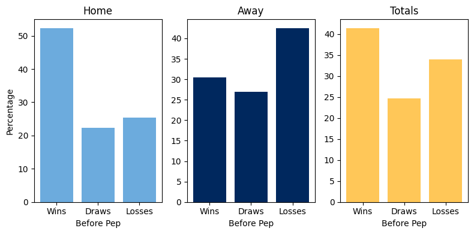

PepCity: analyzing Guardiola’s impact on Manchester City’s performance
Introduction
Background and Motivation
Manchester City Football club is considered one of the best football teams in the world. They have won the English premier league four times in the last five seasons and are on track to win their fifth title. They have also won multiple domestic cups in England and the UK. Manchester city havent always been a successfull club however, and some fans argue that their recent success has only come as a result of ownership change, massive spending and their latest manager, Pep Guardiola. My goal was to investigate Manchester City’s history in the EPL and compare their recent performances under Pep to previous managers.
About the data
For my analysis, I used two datasets sourced from Kaggle in csv format. One contains all Premier League matches played since the EPL’s inception in 1992 up to the recently ended 2022 season. The other dataset contains tweets related to all premier league teams sourced from 2020 for the months of July to October that capture most of the 2020 - 2021 season.
Methodology
Wrangling
The first task was to extract data relating to Manchester city from both the EPL dataset as well as the Tweets dataset. I then separated the data for home and away games and further separated it for games played before Pep Guardiola became coach (1992-2016) and for those played after he became coach (2016-2022). This was achieved using masks.
Analysis
Overall team statistics
W-D-L distribution
Firstly, I wanted to look at the distribution of wins, losses and draws for Manchester City across all games in its Premier League history. The following plots show those results aggregated as percentages by home games, away games and the totals.

From the plots, we can see that Manchester City has won nearly 60% of their home games, 40% of away games and about 50% of their matches overall. They have drawn about 20% of home games which is equally as much as they have lost at home, nearly 25% of their away games and about 20% overall. Manchester City have lost near 35% of their away games and 30% games overall. These stats are really impressive for a team that has been relegated several times in the past.
Goals conceded vs. Goals scored per team
I also wanted to visualize the goals scoredand conceeded by Manchester City against all their opponents in the Premier league to see how they match up.
From the plots, we can see that Manchester city have scored more goals against their opponents for both home and away games. Generally, it seems that Manchester city score more goals at home than away and concede less at home.
How good is Pep Guardiola?
I also wanted to investigate the impact of Pep Guardiola on Manchester City’s performances. Of course, it is important to realise that more goes into the teams statistics than the manager, with factors such as squad depth and signings, opposition squad depth and injuries playing a part. It can be argued however that these factors vary per season and per manager and across all teams such that it is fairly plausible to compare Pep Guardiola’s performance to that of previous managers with different teams under their watch.
W-D-L distribution
Firstly, I plotted the win, draw and loss distribution of Manchester City for home, away and all games both before and under Pep Guardiola.
Results Before Pep

Results under Pep
From the plots we can see that before Pep Guardiola, Manchester City won nearly 50% of their home games, 30% of their away games and 40% overall. They drew just over 20% of their home games, about 25% of their away games and overall. At home, Manchester City lost about 25% of their home games before Pep Guardiola became manager, over 25% of their away games and near;y 35% of all their games.
Under Pep Guardiola, these stats improved significantly. Manchester City have won nearly 80% of all their home games, 70% of their away games and over 70% overall. They have only drawn about 10% at home and away and overall and they have lost less than 10% of their home games, about 15% of their away games and about 10% overall. This shows a remarkable improvement in both home and away games under Pep Guardiola.
Goals scored and conceded before Pep Guardiola
I also wanted to visually compare the goals scored and conceded by Manchester City before and after Pep Guardiola became manager.
Goals scored and conceded under Pep Guardiola
The results are not easily comparable since premier league teams are not constant and some teams that have historically frequently featured in the Premier league have not been promoted under Pep Guardiola’s charge. However we can still see that under Pep, the margins between goals scored and conceded have positively widened.
xG via Machine Learning
To best learn how much Manchester City’s goal margins have improved under Pep Guardiola, I trained a simple machine learning model to predict the goals expected to be scored and conceded by Manchester City given a specific opponent. I further specified that the model should predict differently for home and away games as we have seen that there are significant differences in performance for games played at home and those played away. To get an idea of the model’s output, I selected 5 teams (Liverpool, Manchester United, Arsenal, Chelsea, Tottenham Hotspur),that have arguably been top teams historically in the Premier League and that would have faced Manchester City occasionally both before and after Pep Guardiola became manager. I also selected Watford, Southampton, Burnley, Aston Villa and Everton to add balance. The results are displayed below.
Expected goals before Pep
| Home games | Away games | ||||||||||||||||||||||||||||||||||||||||||||||||||||||||||||||||||
|---|---|---|---|---|---|---|---|---|---|---|---|---|---|---|---|---|---|---|---|---|---|---|---|---|---|---|---|---|---|---|---|---|---|---|---|---|---|---|---|---|---|---|---|---|---|---|---|---|---|---|---|---|---|---|---|---|---|---|---|---|---|---|---|---|---|---|---|
|
|
Expected goals under Pep
| Home games | Away games | ||||||||||||||||||||||||||||||||||||||||||||||||||||||||||||||||||
|---|---|---|---|---|---|---|---|---|---|---|---|---|---|---|---|---|---|---|---|---|---|---|---|---|---|---|---|---|---|---|---|---|---|---|---|---|---|---|---|---|---|---|---|---|---|---|---|---|---|---|---|---|---|---|---|---|---|---|---|---|---|---|---|---|---|---|---|
|
|
As we can see, Manchester City’s xG changed and improved across all the teams for home and away games under Pep Guardiola. This is true for notable teams like Arsenal, Chelsea, Manchester United and Liverpool. For teams like Everton and West Ham away, the xG has been turned around in favor of Manchester City since 2016 when Guardiola took charge.
Tweet city: does Manchester City have no fans?
There is a general belief in the Premier League that Manchester City have no fans or have ‘plastic fans’. On the other hand, Manchester City fans like myself believe that we are overly hated and spoken negatively about by rival fans. I decided to investigate these claims using nearly 140 000 tweets that were filtered for the hashtags : #ManchesterCity, #Mancity or #MCFC. The tweets in the dataset are from July to October in 2020 which captures the end of the pre-season and the first half of the season ending in 2021. I was also interested inseeing what the discourse about Manchester City in this season was and what the general sentiment carried by the tweets was.
KeyError: 'date'Sentiment analysis
To investigate whether Manchester City is really hated, I used the nltk package to calculate the polarity of each tweet and assigned them labels as neutral, positive or neutral based on their score.
From the plot of sentiment distribution we can see that most of the tweets were positive and neutral and a small number of them were negative. This means that contrary to my belief, people generally speak more positively than negatively in their discourse of Manchester City on twitter - at least in reference to this time period. We could argue that Manchester City has a lot of fans, given that the conversations are highly positive. If not, thn rival fans engage in fan behavior towards Manchester City ;)
Distribution of tweets captured
To truly capture the nature of the discourse about Manchester City, I also wanted to capture how the tweets frequency varied for the time period capture aggregated by sentiment. The plot below illustrates this.
From the plot, we can see that the highest volume of tweets was generated in the later part of the pre_season (2741 tweets on July 19) when Manchester City lost the FA Cup semi final to Arsenal . The tweets fluctuated but dropped to their lowest in September (25 tweets on September 19). Positive tweets were more frequent generally over the time period and always outnumbered negative tweets. We can argue that overall, people spoke positively about Manchester City on any given day than they did negatively. It is important to note that negative tweets may also capture part of Manchester City’s fan base given the emotions carried after losing a game or exiting a competition. Some people’s tweets might feature frequently over this time period which means that this is by no means an indicator of the number of fans Manchester City has, coupled with the fact that even rivals or neutrals also tweet about the club.
Wordcloud
I also generated a wordcloud so that I could see what words featured frequently in the tweets and gain insights on some of the conversations.
From the word cloud we can see that some of the more popular names and words that featured are Ferran Torres, (Kevin) de Bruyne, Pep Guardiola, David Silva and Lionel Messi. Some club names were also part of the tweets including Real Madrid, Barcelona, Chelsea and Valencia. Some football terms also showed up such as FA Cup, Chamions League, players transfer and away kit.
Conclusion & Limitations
There is no doubt that Manchester City have improved in their style of play and in their perforance. However, there are a lot of factors that affect the performance of a football team. To accurately potray Manchester City’s improvement under Pep Guardiola, some of these factors need to be taken into account.
Future work
I hope to build on this project by gathering other stats, for example in other domestic competitions like the FA cup and the League Cup to see how Manchester City have fared in competitions outside the premier league. I also want to look into the tactical analysis to see how posession, defense and attack have evolved for Manchester City compared to previous managers. Lastly, I want to extend the project to look at each individual manager in Premier League history so that their individual contributions to the team’s managerial history can be clearly seen. It would also be interesting to extend the project to teams like Manchester United who have been in the Premier league for a longer time and whose performances have regressed in recent times.
References
Datasets
Premier League dataset: https://www.kaggle.com/datasets/evangower/premier-league-matches-19922022
Twitter dataset: https://www.kaggle.com/datasets/wjia26/epl-teams-twitter-sentiment-dataset
Python packages
Harris, C. R., Millman, K. J., van der Walt, S. J., Gommers, R., Virtanen, P., Cournapeau, D., … Oliphant, T. E. (2020). Array programming with NumPy. Nature, 585, 357–362. https://doi.org/10.1038/s41586-020-2649-2
McKinney, W., & others. (2010). Data structures for statistical computing in python. In Proceedings of the 9th Python in Science Conference (Vol. 445, pp. 51–56).
Hunter, J. D. (2007). Matplotlib: A 2D graphics environment. Computing in Science & Engineering, 9(3), 90–95.
Bird, S., Klein, E., & Loper, E. (2009). Natural language processing with Python: analyzing text with the natural language toolkit. ” O'Reilly Media, Inc.”
P'erez, Fernando, & Granger, B. E. (2007). IPython: a system for interactive scientific computing. Computing in Science & Engineering, 9(3).
Pedregosa, F., Varoquaux, Ga”el, Gramfort, A., Michel, V., Thirion, B., Grisel, O., … others. (2011). Scikit-learn: Machine learning in Python. Journal of Machine Learning Research, 12(Oct), 2825–2830.
Oesper, L., Merico, D., Isserlin, R., & Bader, G. D. (2011). WordCloud: a Cytoscape plugin to create a visual semantic summary of networks. Source Code for Biology and Medicine, 6(1), 7.
Van Rossum, G. (2020). The Python Library Reference, release 3.8.2. Python Software Foundation.